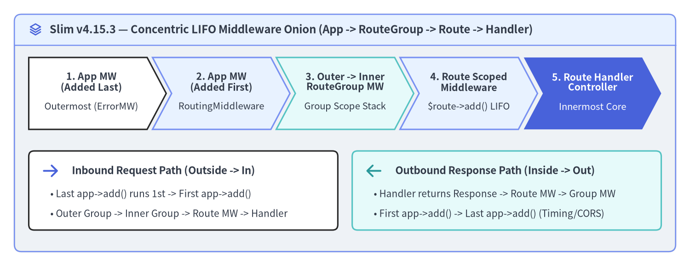
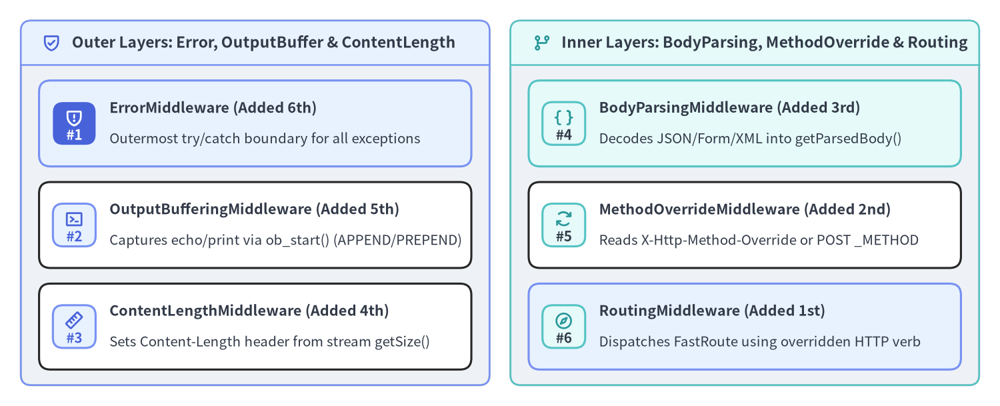

PSR-15 Concentric LIFO Pipeline
Slim v4.15.3 implements its request processing pipeline as a concentric PSR-15 middleware onion powered by Slim\MiddlewareDispatcher. Every middleware wraps the next Psr\Http\Server\RequestHandlerInterface layer around the core Slim\Routing\RouteRunner. Understanding how Last-In, First-Out (LIFO) registration works—and how application, RouteGroup, and Route middlewares combine at runtime—is essential for ordering authentication, body parsing, method overriding, routing, and exception handling without subtle ordering bugs.

Source Code
from drawlib.canvas import save, setup
from drawlib.icons import phosphor
from drawlib.shapes import rectangle
from drawlib.smartarts import ChevronProcess, Panel
from drawlib.styles import Styles
from drawlib.text import text
setup(width=192, height=74, dpi=150)
outer = Panel(
"Slim v4.15.3 — Concentric LIFO Middleware Onion (App -> RouteGroup -> Route -> Handler)",
style=Styles.Neutral.patch(shape_r=2.0),
header_style=Styles.PrimaryNeutral.patch(shape_line_width=1.2),
text_style=Styles.DarkBold.patch(text_size=11.5),
icon=phosphor.stack,
icon_style=Styles.PrimaryBold,
header_variant="filled",
header_height=8.5,
)
outer.draw((4.0, 4.0), width=184.0, height=66.0)
proc = ChevronProcess(
style=Styles.White,
text_style=Styles.DarkBold.patch(text_size=10.2),
description_style=Styles.Dark.patch(text_size=9.8),
corner_angle=62.0,
spacing=1.5,
flat_left_end=True,
)
proc.add(
"1. App MW\n(Added Last)",
description="Outermost (ErrorMW)",
style=Styles.White,
)
proc.add(
"2. App MW\n(Added First)",
description="RoutingMiddleware",
style=Styles.PrimaryNeutral,
)
proc.add(
"3. Outer -> Inner\nRouteGroup MW",
description="Group Scope Stack",
style=Styles.SecondaryNeutral,
)
proc.add(
"4. Route Scoped\nMiddleware",
description="$route->add() LIFO",
style=Styles.PrimaryNeutral,
)
proc.add(
"5. Route Handler\nController",
description="Innermost Core",
style=Styles.PrimaryFlat,
text_style=Styles.WhiteBold.patch(text_size=10.2),
description_style=Styles.White.patch(text_size=9.8),
)
proc.draw(xy=(8.0, 38.0), width=176.0, height=20.0)
rectangle((51.0, 21.0), width=86.0, height=22.0, style=Styles.White.patch(shape_r=1.5))
phosphor.arrow_right((14.0, 26.5), width=5.2, style=Styles.PrimaryBold)
text(
(20.0, 26.5),
"Inbound Request Path (Outside -> In)",
style=Styles.DarkBold.patch(text_size=10.8, halign="left"),
)
text(
(14.0, 20.0),
"• Last app->add() runs 1st -> First app->add()",
style=Styles.Dark.patch(text_size=10.0, halign="left"),
)
text(
(14.0, 14.5),
"• Outer Group -> Inner Group -> Route MW -> Handler",
style=Styles.Dark.patch(text_size=10.0, halign="left"),
)
rectangle((141.0, 21.0), width=86.0, height=22.0, style=Styles.SecondaryNeutral.patch(shape_r=1.5))
phosphor.arrow_left((104.0, 26.5), width=5.2, style=Styles.SecondaryBold)
text(
(110.0, 26.5),
"Outbound Response Path (Inside -> Out)",
style=Styles.DarkBold.patch(text_size=10.8, halign="left"),
)
text(
(104.0, 20.0),
"• Handler returns Response -> Route MW -> Group MW",
style=Styles.Dark.patch(text_size=10.0, halign="left"),
)
text(
(104.0, 14.5),
"• First app->add() -> Last app->add() (Timing/CORS)",
style=Styles.Dark.patch(text_size=10.0, halign="left"),
)
save()
How MiddlewareDispatcher Builds the Concentric LIFO Stack
When Slim\App is constructed, MiddlewareDispatcher initializes its internal $this->tip pointer to Slim\Routing\RouteRunner. Each time you call $app->add($middleware), MiddlewareDispatcher::seedMiddlewareStack() wraps the current $this->tip inside a new anonymous RequestHandlerInterface node. Because each newly added middleware wraps the existing stack from the outside, the last middleware added via $app->add() becomes the outermost layer of the onion:
| Registration Order in Code | Layer Position in Onion | Inbound Request Execution Order | Outbound Response Execution Order |
|---|---|---|---|
1. $app->add(MiddlewareA::class) |
Innermost App Layer (wraps RouteRunner) |
3rd (just before RouteRunner) |
2nd (right after RouteRunner) |
2. $app->add(MiddlewareB::class) |
Middle App Layer (wraps MiddlewareA) |
2nd | 3rd |
3. $app->add(MiddlewareC::class) |
Outermost App Layer (wraps MiddlewareB) |
1st (first to inspect $request) |
4th (last to inspect $response) |
Core RouteRunner + Route Handler |
Center of the Onion | 4th (produces ResponseInterface) |
1st (returns ResponseInterface) |
Authoring PSR-15 Class & Closure Middleware
Slim accepts three middleware formats in $app->add(), $group->add(), and $route->add():
- PSR-15
MiddlewareInterfaceInstance or Container Service String (MyMiddleware::class): The recommended production pattern. When registered as a class-name string,MiddlewareDispatcherresolves the class lazily from your PSR-11 container only when that middleware layer is reached. - Invokable Class or Closure (
fn(ServerRequestInterface $request, RequestHandlerInterface $handler): ResponseInterface): Handy for lightweight inline wiring or tests. - Callable String (
'App\Middleware\CustomMiddleware:process'): Resolved viaAdvancedCallableResolverInterface.
<?php
declare(strict_types=1);
namespace App\Middleware;
use Psr\Http\Message\ResponseInterface as Response;
use Psr\Http\Message\ServerRequestInterface as Request;
use Psr\Http\Server\MiddlewareInterface;
use Psr\Http\Server\RequestHandlerInterface as RequestHandler;
use Slim\Psr7\Factory\ResponseFactory;
final class RequestIdAndTimingMiddleware implements MiddlewareInterface
{
public function process(Request $request, RequestHandler $handler): Response
{
// 1. Inbound pre-processing (before downstream layers and controller)
$startTime = hrtime(true);
$requestId = $request->getHeaderLine('X-Request-Id') ?: bin2hex(random_bytes(8));
// Propagate correlation ID downstream via an immutable request attribute
$request = $request->withAttribute('request_id', $requestId);
// 2. Delegate to the next inner layer in the concentric onion
$response = $handler->handle($request);
// 3. Outbound post-processing (after downstream layers return Response)
$elapsedMs = (hrtime(true) - $startTime) / 1_000_000;
return $response
->withHeader('X-Request-Id', $requestId)
->withHeader('X-Response-Time-Ms', sprintf('%.2f', $elapsedMs));
}
}
// Short-circuiting example: returning a Response early without calling $handler->handle()
$maintenanceGuard = static function (Request $request, RequestHandler $handler): Response {
if (($_ENV['MAINTENANCE_MODE'] ?? 'false') === 'true') {
$response = (new ResponseFactory())->createResponse(503);
$response->getBody()->write('{"error":"Service temporarily under maintenance"}');
return $response
->withHeader('Content-Type', 'application/json')
->withHeader('Retry-After', '120');
}
return $handler->handle($request);
};
Combined Execution Order: App, RouteGroup & Route Scopes
A frequent architectural question is how application middlewares ($app->add()), nested group middlewares ($group->add()), and route middlewares ($route->add()) interact. Slim uses a two-stage dispatch model:
- Stage 1 — Application
MiddlewareDispatcher: Executes all$app->add()middlewares in LIFO order until reachingRouteRunner::handle(). - Stage 2 —
Route::prepare()InsideRouteRunner: WhenRouteRunnerinvokes the matchedRoute,Route::appendGroupMiddlewareToRoute()walks the route's parentRouteGroupchain from innermost to outermost, appending each group's middlewares onto the route's internal middleware list. Because theRoute's ownMiddlewareDispatcherwraps the route callable in LIFO order:- Across Group Hierarchy: Outer
RouteGroupmiddleware wraps InnerRouteGroupmiddleware, which wrapsRoutemiddleware, which wraps the Route Handler. - Within the Same Scope: Multiple
$route->add()calls on the same route (or multiple$group->add()calls on the same group) follow standard LIFO order (last added on that scope wraps earlier ones on that same scope).
- Across Group Hierarchy: Outer
<?php
declare(strict_types=1);
use Psr\Http\Message\ResponseInterface as Response;
use Psr\Http\Message\ServerRequestInterface as Request;
use Psr\Http\Server\RequestHandlerInterface as RequestHandler;
use Slim\Factory\AppFactory;
use Slim\Routing\RouteCollectorProxy;
$app = AppFactory::create();
$trace = static fn(string $label) => static function (Request $req, RequestHandler $h) use ($label): Response {
$res = $h->handle($req->withAttribute('trace', [...$req->getAttribute('trace', []), "in:$label"]));
return $res->withAddedHeader('X-Trace-Out', $label);
};
// App scope (LIFO: App2 runs before App1 on inbound)
$app->add($trace('App1'));
$app->add($trace('App2'));
$app->group('/api', function (RouteCollectorProxy $api) use ($trace): void {
$api->group('/v1', function (RouteCollectorProxy $v1) use ($trace): void {
$v1->get('/ping', function (Request $request, Response $response): Response {
// Inbound trace order is:
// ["in:App2", "in:App1", "in:OuterGroup", "in:InnerGroup", "in:Route2", "in:Route1"]
$payload = json_encode(['inbound' => $request->getAttribute('trace')], JSON_THROW_ON_ERROR);
$response->getBody()->write($payload);
return $response->withHeader('Content-Type', 'application/json');
})
->add($trace('Route1'))
->add($trace('Route2'));
})->add($trace('InnerGroup'));
})->add($trace('OuterGroup'));
Built-In Utility Middlewares & Canonical Registration Order
Beyond RoutingMiddleware, BodyParsingMiddleware, and ErrorMiddleware, Slim v4.15.3 ships three additional PSR-15 utility middlewares in Slim\Middleware\:

Source Code
from drawlib.canvas import save, setup
from drawlib.icons import phosphor
from drawlib.smartarts import CardList, Panel
from drawlib.styles import Styles
setup(width=192, height=78, dpi=150)
left_panel = Panel(
"Outer Layers: Error, OutputBuffer & ContentLength",
style=Styles.Neutral.patch(shape_r=2.0),
header_style=Styles.PrimaryNeutral.patch(shape_line_width=1.2),
text_style=Styles.DarkBold.patch(text_size=11.0),
icon=phosphor.shield_check,
icon_style=Styles.PrimaryBold,
header_variant="filled",
header_height=8.5,
)
left_panel.draw((4.0, 4.0), width=90.0, height=70.0)
l_xy, l_w, l_h = left_panel.get_content_box((4.0, 4.0), width=90.0, height=70.0, padding=(3.5, 3.0))
cl_left = CardList(
style=Styles.White,
text_style=Styles.DarkBold.patch(text_size=10.4),
description_style=Styles.Dark.patch(text_size=9.9),
badge_shape="rounded_rect",
badge_style=Styles.PrimaryNeutral,
badge_text_style=Styles.PrimaryBold.patch(text_size=10.0),
icon_style=Styles.PrimaryBold,
direction="vertical",
spacing=3.0,
)
cl_left.add(
"ErrorMiddleware (Added 6th)",
"Outermost try/catch boundary for all exceptions",
badge_text="#1",
icon=phosphor.shield_warning,
style=Styles.PrimaryNeutral,
badge_style=Styles.PrimaryFlat,
badge_text_style=Styles.WhiteBold.patch(text_size=10.0),
icon_style=Styles.WhiteBold,
)
cl_left.add(
"OutputBufferingMiddleware (Added 5th)",
"Captures echo/print via ob_start() (APPEND/PREPEND)",
badge_text="#2",
icon=phosphor.terminal_window,
style=Styles.White,
)
cl_left.add(
"ContentLengthMiddleware (Added 4th)",
"Sets Content-Length header from stream getSize()",
badge_text="#3",
icon=phosphor.ruler,
style=Styles.White,
)
cl_left.draw(xy=l_xy, width=l_w, height=l_h)
right_panel = Panel(
"Inner Layers: BodyParsing, MethodOverride & Routing",
style=Styles.Neutral.patch(shape_r=2.0),
header_style=Styles.SecondaryNeutral.patch(shape_line_width=1.2),
text_style=Styles.DarkBold.patch(text_size=11.0),
icon=phosphor.git_branch,
icon_style=Styles.SecondaryBold,
header_variant="filled",
header_height=8.5,
)
right_panel.draw((98.0, 4.0), width=90.0, height=70.0)
r_xy, r_w, r_h = right_panel.get_content_box((98.0, 4.0), width=90.0, height=70.0, padding=(3.5, 3.0))
cl_right = CardList(
style=Styles.White,
text_style=Styles.DarkBold.patch(text_size=10.4),
description_style=Styles.Dark.patch(text_size=9.9),
badge_shape="rounded_rect",
badge_style=Styles.SecondaryNeutral,
badge_text_style=Styles.DarkBold.patch(text_size=10.0),
icon_style=Styles.SecondaryBold,
direction="vertical",
spacing=3.0,
)
cl_right.add(
"BodyParsingMiddleware (Added 3rd)",
"Decodes JSON/Form/XML into getParsedBody()",
badge_text="#4",
icon=phosphor.brackets_curly,
style=Styles.SecondaryNeutral,
)
cl_right.add(
"MethodOverrideMiddleware (Added 2nd)",
"Reads X-Http-Method-Override or POST _METHOD",
badge_text="#5",
icon=phosphor.arrows_clockwise,
style=Styles.White,
)
cl_right.add(
"RoutingMiddleware (Added 1st)",
"Dispatches FastRoute using overridden HTTP verb",
badge_text="#6",
icon=phosphor.compass,
style=Styles.PrimaryNeutral,
)
cl_right.draw(xy=r_xy, width=r_w, height=r_h)
save()
Built-In Middleware (Slim\Middleware\*) |
Key Constructor / Options | Required Placement in Pipeline |
|---|---|---|
RoutingMiddleware |
new RoutingMiddleware($routeResolver, $routeParser) |
Added 1st (Innermost): Runs after MethodOverrideMiddleware and before RouteRunner |
MethodOverrideMiddleware |
new MethodOverrideMiddleware() |
Added 2nd: Must run after BodyParsingMiddleware (to read POST _METHOD) and before RoutingMiddleware |
BodyParsingMiddleware |
$app->addBodyParsingMiddleware($bodyParsers) |
Added 3rd: Parses JSON/XML/Form body before MethodOverrideMiddleware and controllers |
ContentLengthMiddleware |
new ContentLengthMiddleware() |
Added 4th: Runs on outbound response after all body-mutating middlewares (OutputBufferingMiddleware) |
OutputBufferingMiddleware |
new OutputBufferingMiddleware($streamFactory, OutputBufferingMiddleware::APPEND) |
Added 5th: Wraps handlers in ob_start() and appends (APPEND) or prepends (PREPEND) stray echo output |
ErrorMiddleware |
$app->addErrorMiddleware($displayDetails, $logErrors, $logDetails) |
Added 6th (Outermost): Catches exceptions thrown by any inner middleware or route handler |
[!IMPORTANT] Why
MethodOverrideMiddlewareDepends on BothBodyParsingMiddlewareandRoutingMiddleware:MethodOverrideMiddlewareinspects theX-Http-Method-Overrideheader and, onPOSTrequests, checks(array) $request->getParsedBody()for a_METHODparameter (e.g.,_METHOD=DELETE). Therefore, on the inbound request path,BodyParsingMiddlewaremust execute beforeMethodOverrideMiddleware(so_METHODis already parsed), andMethodOverrideMiddlewaremust execute beforeRoutingMiddleware(so FastRoute matches the overriddenDELETEmethod rather thanPOST).
<?php
declare(strict_types=1);
use Slim\Factory\AppFactory;
use Slim\Middleware\ContentLengthMiddleware;
use Slim\Middleware\MethodOverrideMiddleware;
use Slim\Middleware\OutputBufferingMiddleware;
$app = AppFactory::createFromContainer($container);
// 1. Innermost: FastRoute matching (Runs 6th on inbound request)
$app->addRoutingMiddleware();
// 2. Method override via X-Http-Method-Override or POST _METHOD (Runs 5th on inbound)
$app->add(new MethodOverrideMiddleware());
// 3. Parse JSON / Form / XML bodies before MethodOverride & handlers (Runs 4th on inbound)
$app->addBodyParsingMiddleware();
// 4. Compute Content-Length header on outbound response (Runs 3rd on inbound / 4th on outbound)
$app->add(new ContentLengthMiddleware());
// 5. Capture stray PHP echo/print buffers via ob_start() (Runs 2nd on inbound)
$app->add(new OutputBufferingMiddleware(
$app->getResponseFactory()->createResponse()->getBody() instanceof \Psr\Http\Message\StreamInterface
? new \Slim\Psr7\Factory\StreamFactory()
: $container->get(\Psr\Http\Message\StreamFactoryInterface::class),
OutputBufferingMiddleware::APPEND
));
// 6. Outermost: Global exception boundary (Added last -> Runs 1st on inbound / Last on outbound)
$app->addErrorMiddleware(displayErrorDetails: false, logErrors: true, logErrorDetails: true);
With the PSR-15 concentric LIFO pipeline in place, proceed to Chapter 5: JWT Auth, RBAC Guards & CORS and ErrorMiddleware & Custom Renderers to implement production security guards and structured error responses, or explore MiddlewareDispatcher internals in the Slim 4 Internal Architecture and Slim 4 API Reference portals.